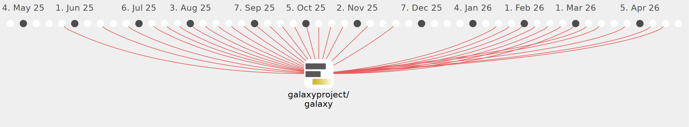

itisAliRH

Commits all-time: 370
Commits last year: 207

(204)
- e2376d7
- fdee981
- e0f6025
- a53d01e
- 4cc45a7
- abd7f9e
- b772cb3
- 47661c9
- adf587f
- ed28c7d
- a939759
- 4763211
- e3836fb
- 4e06c28
- 2c6e669
- 9d92835
- b351e2e
- 32f7887
- f374c1c
- 617bff5
- 23f6423
- 1f6fb46
- c61727d
- c71df97
- e00efbf
- c9f1e86
- 09e4aad
- e08cf49
- 408c100
- ebb9be6
- 5235704
- 8b4fdc0
- 559a7bd
- 15c75db
- b8077ae
- 04cfd38
- f3efc72
- ef647c2
- 304b382
- 39a8c51
- 3ba0654
- f606254
- 7a85a5f
- 98dc7e3
- 7b81b84
- 350965c
- 5827cb9
- 30af711
- fc1578e
- c9174a7
- da12c7b
- 3bf93a3
- a85b32b
- 5a0d7f8
- 99c1c20
- ce0efe8
- 472436b
- 123f070
- 866b0be
- 1d8780a
- 17edc6a
- de84146
- 451d03c
- 77494e8
- 8a40bc2
- 215f943
- 5ded554
- 70186f2
- f93754a
- d9656c5
- 031d6ee
- 2361e54
- aa3afd9
- 1c419dc
- 6e71931
- 3445f60
- c09613a
- 42e1acd
- 50a9bed
- b79395c
- 23b2f15
- 55abb4d
- 91933a1
- 43e6876
- 01f2268
- 1f9c457
- 1f5b7a7
- 73239d3
- 123117e
- c8b7110
- d13c4a0
- 100b4fd
- 19756ab
- ca5a3bd
- 22410e1
- 0b11207
- 2ebdc2a
- dad2d3c
- 683d8e4
- bcfeb3a
- 7193781
- 4b0ddf8
- 18c9292
- ef31044
- 2a03e4a
- 1d86f36
- 3695935
- bca65d3
- 32855a2
- ed98e86
- 74fb6c8
- 9c748f1
- 9004a07
- cf59c76
- e38dbfe
- d4b1595
- b224b63
- c1f7fa8
- e545676
- 8ed34e1
- 58bbf54
- ed79ae9
- 7416c7d
- cd4e9eb
- 377999f
- 582a328
- 9dc6fd9
- 09381c9
- 44cd160
- f18729c
- dcd2d6a
- faf19bd
- c6cb00a
- 4592ddd
- e5390a0
- e7b2502
- 1718e0f
- c2d64e2
- aaac150
- f188617
- 49f3814
- a7aab75
- 2497435
- 9971f6b
- b68bc6d
- e5c73b3
- 3576ece
- 3a0ff0d
- 11f19ae
- d558cf0
- 1f3a655
- f9491c9
- 4625293
- b2bb64f
- 3b4b7a5
- 472d20d
- fafcfbb
- 3ab48c4
- a9e4125
- 533cd8a
- 500235e
- c1b33f0
- 8ed73db
- 9acd44d
- 54d2e2c
- 865148c
- e2bdabf
- 1019ea4
- b5e9fbb
- ed0e48f
- 278f9aa
- 68295f7
- 9194e5b
- ab8307a
- 2a3fc49
- dab6471
- c59665d
- a7c4f09
- 4c0f82f
- 9b92932
- 4117e2b
- b1a5b1c
- e3fa40c
- 0388f13
- 0f9b1c1
- ad5c7dd
- 3eebd62
- 46fe8e8
- 4a21e0d
- caaa9c5
- 13e5e4b
- 56e77d9
- 5959d3c
- 1707f30
- 43cfce4
- 116d94c
- 1b671cd
- 807b028
- d05bcba
- 4fbf52a
- 2ac90d6
- 03658e4
- 95dd73f
- 4b23c31
(3)